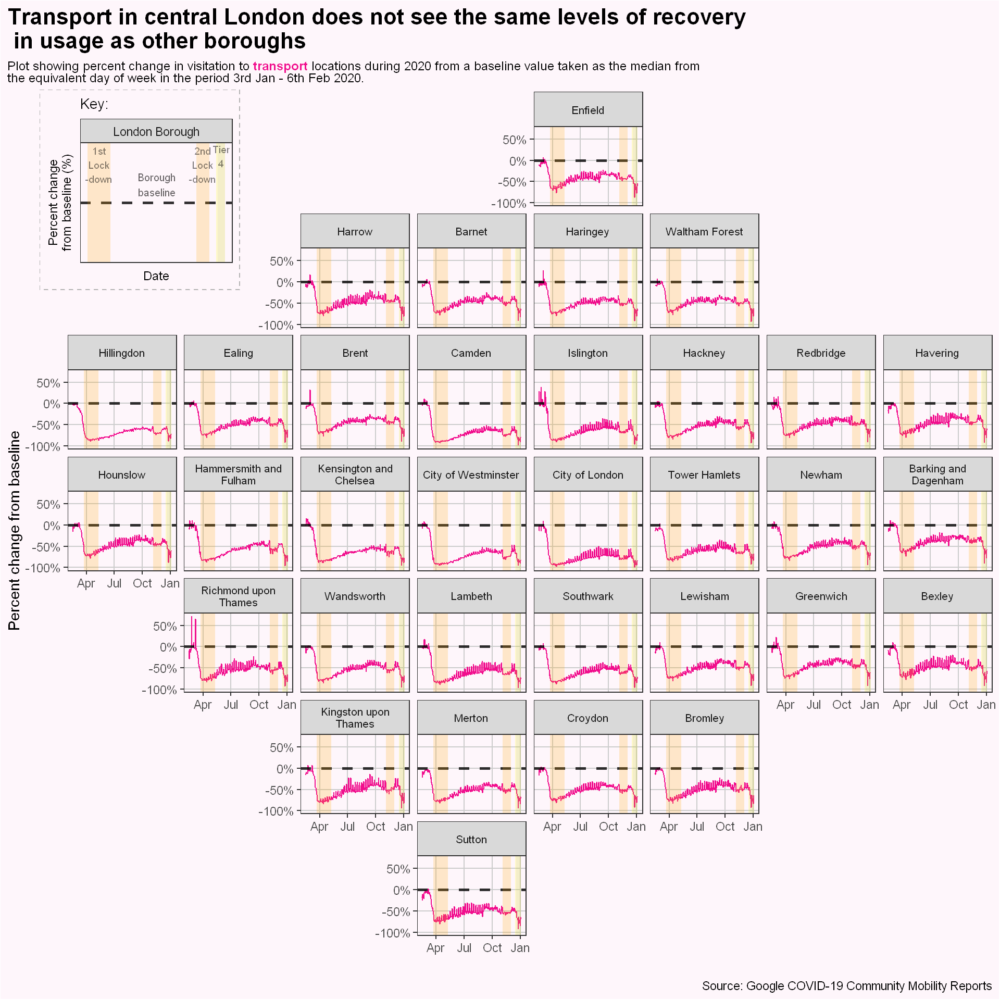

It goes without saying that 2020 was a year unlike any other, coronavirus has had a massive global impact that has seeped into every corner of our lives.
As I live in London, I want to see what effects it has had on the way people have gone about their daily lives in London. So today I will be looking at the data about Londoners and their lives during 2020, more specifically, how did their movements to places such as: homes, workplaces, parks, shops, and transport locations changed over the year.
I will explore two datasets. The first is from the Department of Transport and shows the usage of transport in the UK and the change from 2019. We will only focus on Transport for London (TfL) services.
The second dataset is from the Google Covid-19 Community Mobility Reports, and it explores the change in the number of visitors from a baseline average taken before the pandemic at various regional levels for many different countries. The regional levels are from a state level down to a local province level. We will focus only on London, and in particular, it’s boroughs.
Both datasets were collected on 6th January 2021, so there may be slight changes for the newest values in the future, but the difference shouldn’t be too great. Now let us explore the first dataset.
Transport for London services
library(tidyverse)
library(geofacet)
library(ggtext)
library(grid)
options(kableExtra.html.bsTable = TRUE)
#knitr::opts_chunk$set(dpi = 300)
transport <- read_csv(here::here("static","data","UK2020Travel.csv"))
transport <- janitor::clean_names(transport) %>%
select(date,tube = transport_for_london_tube, bus = transport_for_london_bus) %>%
mutate( date = lubridate::dmy(date),
across( tube:bus , ~ (1/100) * as.double(str_remove_all(.x,'[.%]')) -1 )
)
glimpse(transport)
## Rows: 310
## Columns: 3
## $ date <date> 2020-03-01, 2020-03-02, 2020-03-03, 2020-03-04, 2020-03-05, 2...
## $ tube <dbl> 0.04, -0.05, -0.05, -0.05, -0.08, -0.08, -0.09, -0.13, -0.10, ...
## $ bus <dbl> 0.02, -0.03, -0.04, -0.03, -0.08, -0.04, -0.07, -0.05, -0.05, ...
The first dataset is of Transport for London services. The data was collected from entry/exit data for Tube stations and tap-in data for the buses. There was a period of time where the tap-in data was unavailable due to a change in policy to ensure driver safety meaning there will be missing data for bus usage.
We see the rates of usage as a percent of the equivalent day in 2019, for tube and bus services. By plotting the data, we can see what the trend was for these transport services.
In the time period of the data, London went into lockdown twice, and went under various levels of restrictions. So by labelling these occasions on a graph, we can see what effect lockdowns and restrictions had on usage rates.
lockdown_ann <- function(start_date,end_date,fill="orange",text=FALSE,label=label,vjust=3,size=3){
# Helper function to create annotations for plots
if (text == FALSE){
annotate(geom="rect",xmin= start_date , xmax = end_date , ymin= -Inf, ymax = Inf ,alpha=0.2, fill=fill)
}
else{annotate(geom="text",x= (start_date-end_date )/2 + end_date,
y=Inf,
label=label,vjust=vjust,alpha=0.5,size=size)
}
}
# Set the dates for the start and end of lockdown periods
lockdown_1_start <- as.Date("2020-03-23")
lockdown_1_end <- as.Date("2020-05-10")
lockdown_2_start <- as.Date("2020-11-05")
lockdown_2_end <- as.Date("2020-12-02")
tier_3_start <- as.Date("2020-12-16")
tier_3_end <- as.Date("2020-12-19")
tier_4_start <- as.Date("2020-12-19")
tier_4_end <- as.Date("2021-01-04")
lockdown_1 <- lockdown_ann(lockdown_1_start ,lockdown_1_end)
lockdown_1_text <- lockdown_ann(lockdown_1_start ,lockdown_1_end,text=TRUE,label="1st\nLockdown")
lockdown_2 <- lockdown_ann(lockdown_2_start,lockdown_2_end)
lockdown_2_text <- lockdown_ann(lockdown_2_start,lockdown_2_end,text=TRUE,label="2nd\nLockdown")
tier3 <- lockdown_ann(tier_3_start,tier_3_end,fill="yellow")
tier3_text <- lockdown_ann(tier_3_start,tier_3_end,text=TRUE,label="Tier\n3")
tier4 <- lockdown_ann(tier_4_start,tier_4_end,fill="yellow3")
tier4_text <- lockdown_ann(tier_4_start,tier_4_end,text=TRUE,label="Tier\n4")
transport %>%
pivot_longer( cols= (tube:bus) , names_to = "transport_mode", values_to = "rate" ) %>%
#na.omit() %>%
ggplot(aes(x=date,y=rate,group=transport_mode,col=transport_mode))+
geom_line()+
lockdown_1 +
lockdown_1_text +
lockdown_2 +
lockdown_2_text +
tier3+
tier3_text+
tier4+
tier4_text+
geom_hline(yintercept = 0,lty=2, alpha=0.4)+
annotate(geom="text",label="Previous year\nbaseline", x = as.Date("2020-08-09"),y=0,vjust=.5,alpha=0.6 )+
scale_y_continuous(labels = scales::percent_format())+
scale_x_date( breaks = seq(as.Date("2020-03-01"), as.Date("2021-01-04"),by="2 week" ) ,labels = scales::label_date_short() )+
labs(title="Transport for London (TfL) services in 2020 saw a massive decline in usage from 2019",
subtitle = "2020 passenger numbers for TfL services as percent change from equivalent day and week in 2019",
x="",
y="Percent change",
col="Service",
caption="Source: Department of Transport statistics")+
theme_bw()+
scale_color_manual(values = c("#da291c","#10069F"),labels=c("Bus","Tube"))+
theme(legend.position = "top",
panel.grid.minor.x = element_blank(),
plot.title.position = "plot",
plot.caption.position = "plot")+
guides(color = guide_legend(override.aes = list(size = 3)))
We see the usage of the transport services as a percent change of the previous year. To interpret this, as an example, on the 19th July 2020, the percent change for the tube was -75%, meaning that day saw only 25% of the number of people using the tube from 2019 in 2020 on that specific day.
From the trend of the graph, TfL services saw a drop in passenger numbers using the tube or buses. Even before the first lockdown, it is evident that more and more people were not using those services.
During the first lockdown, and in the first half of lockdown for buses, the change from the previous year remained relatively constant - there is some variation due to the weekday/weekend effect.
As the first lockdown ends the numbers start to recover somewhat from late Spring to mid Summer. From the end of August to the beginning of the second lockdown, the average value is constant before seeing a jump in usage immediately before the 2nd lockdown. Once the lockdown is underway, the percentage change drops.
There is a brief recovery as the 2nd lockdown is eased, however it is short-lived as London is once again forced into restrictions by being placed at tier 3, while then being upgraded to the worse tier 4 level only a few day later. Tier 4 is essentially a lockdown, but on a local level rather than a national one. The restrictions led to a decline in passenger numbers from the same time last year.
We can compare how the passengers numbers changed from the baseline during the two lockdowns, in particular, the numbers changing during the weekday and weekends. It is important to do this as the behaviour and movement of people is influenced by the day of week; a simple example is that many people travelling to work on Monday to Friday, but not Saturday or Sunday.
transport %>%
mutate( lockdown = case_when(date >= lockdown_1_start & date <= lockdown_1_end ~ "1st Lockdown",
date >= lockdown_2_start & date <= lockdown_2_end ~ "2nd Lockdown",
TRUE ~ "none")) %>%
filter(lockdown != "none") %>%
pivot_longer(cols = tube:bus, names_to = "service") %>%
na.omit() %>%
mutate( day_of_week = if_else (lubridate::wday(date,label=TRUE) %in% c("Sun","Sat"), "Weekend", "Weekday") ) %>%
group_by(service,lockdown,day_of_week) %>%
summarise( avg_change = paste( round(mean(value)*100,1) ,"%") ,.groups="drop" ) %>%
pivot_wider(names_from= lockdown, values_from = avg_change) %>%
pivot_wider(names_from = day_of_week, values_from = c("1st Lockdown","2nd Lockdown") ) %>%
select(service,"1st Lockdown_Weekday","2nd Lockdown_Weekday","1st Lockdown_Weekend","2nd Lockdown_Weekend") %>%
kableExtra::kable(col.names = c("Service","1st Lockdown","2nd Lockdown","1st Lockdown","2nd Lockdown"),align = "rcccc" ,caption = "Average percent change from baseline for TfL services during lockdowns grouped by day of week and lockdown" , ) %>%
kableExtra::kable_styling(bootstrap_options = c(),full_width = F) %>%
kableExtra::add_header_above(c(" " = 1, "Weekday" = 2, "Weekend" = 2) ) %>%
kableExtra::column_spec(column = c(2,3),background = "#F8F7F7" ) %>%
kableExtra::kable_classic( html_font = "Helvetica")
Table 1: Average percent change from baseline for TfL services during lockdowns grouped by day of week and lockdown
|
|
Weekday
|
Weekend
|
|
Service
|
1st Lockdown
|
2nd Lockdown
|
1st Lockdown
|
2nd Lockdown
|
|
bus
|
-81.6 %
|
-51.2 %
|
-83.9 %
|
-60.5 %
|
|
tube
|
-94.4 %
|
-76.2 %
|
-95.9 %
|
-81.9 %
|
We see from Table 1 that the numbers of people using buses dropped by 81.6% on weekdays and 83.9% on weekends. For the tube, we see an even bigger percentage decrease for weekdays and weekends, with values of 94.4% and 95.9% respectively.
The second lockdown saw a recovery in passenger numbers across the board. On weekdays, buses recovered from a 81.6% decrease to a 51.2% decrease. The smaller negative percent change means it is returning to the baseline average from pre-pandemic times.
This means the second lockdown saw a closer return to pre-pandemic levels than the first lockdown in terms of percentage of passenger numbers.
London Mobility
The second dataset is from the Google Covid-19 Community Mobility Report, which shows how visits to certain places changed over the course of 2020 from a baseline value. The baseline value is taken as the median value for the corresponding day of week in the period 3rd Jan - 6th Feb 2020.
The data is from the sample of Google users who have opted-in to Location History on their Google accounts. While the sample is not completely representative of the entire population, we can assume that it is sufficient for our purpose. This is because not everyone will have a Google account, and not every Google account holder will choose to opt-in, but we can assume the sample is large enough to represent as our population.
The locations looked at are:
Residential - The data here looks at the amount of time spent at these residential places, rather than the number of people
Workplaces - Mobility trend for places of work
Parks - Mobility trend at locations include local parks, national parks, public beaches, public gardens, and castles (anyone fancy a trip to test their eyesight?)
Transit Stations - Mobility trend in places like train stations, bus stops, and subway stations
Retail and Recreation - Mobility trend at locations like restaurants, cafes, shopping centres, theme parks, museums, libraries, and cinemas
Grocery & pharmacy - Mobility trends for places like supermarkets, food warehouses, farmers markets, specialty food shops, and pharmacies
Google has also noted several things to keep in mind when looking at the data:
Avoid comparing day-to-day comparisons, especially with weekends and weekdays, as there are seven baselines values being compared, one for each day of the week. This seasonality will also show up in our graphs resulting in “spiky” changes. Behaviour is different for weekdays and weekends.
Take the example of workplaces, if fewer people go to work on a Sunday than a weekday before the pandemic, then only a small fraction of those would go to work on a Sunday during the pandemic, so since this small value is only changing a little, we would only get a small percentage change, meaning those values will be very close to our baseline. This will contrast with the weekdays which a much larger percent of the working population not working at their normal locations.
There may be large changes in the mobility trend because of the weather or public holidays. People are more likely to visit these locations when the weather is good or if it’s a public holiday.
There may be gaps in data due to data quality and privacy issues. Thus, the missing data should be treated as true unknowns.
With that out of the way we can explore the data.
#### This is a cleaning script that used the data downloaded direct from Google
### For some reason the website does not like to handle this data,
### so I was forced to save it as an .rds file and load that in
# london_mobility <- read_csv(here::here("static","data","2020_GB_Region_Mobility_Report.csv"),col_types = "ccccccccdddddd")
#
# london_mobility <- london_mobility %>%
# filter(sub_region_1 == "Greater London") %>%
# select(-country_region,-country_region_code,-metro_area,-census_fips_code,
# ) %>%
# mutate( date = lubridate::dmy(date)) %>%
# rename_with(.,ends_with("baseline"), .fn = ~ str_remove_all(.,"_percent_change_from_baseline")) %>%
# mutate(sub_region_2 = replace_na(sub_region_2,"All") ) %>%
# mutate(sub_region_2 = str_remove_all(sub_region_2,"^London Borough of |^Royal Borough of " ) )
#
# saveRDS(london_mobility,file = "london_mobility.rds")
london_mobility <- readRDS(here::here("static","data","london_mobility.rds"))
all_mobility <- london_mobility %>%
filter(sub_region_2 == "All") %>%
select(date:residential) %>%
pivot_longer(retail_and_recreation:residential) %>%
mutate( name = str_replace_all(name,"_"," ") ) %>%
mutate( name = str_to_title(name)) %>%
mutate( value = (value)/100 )
glimpse(all_mobility)
## Rows: 1,944
## Columns: 3
## $ date <date> 2020-02-15, 2020-02-15, 2020-02-15, 2020-02-15, 2020-02-15, ...
## $ name <chr> "Retail And Recreation", "Grocery And Pharmacy", "Parks", "Tr...
## $ value <dbl> -0.11, -0.08, -0.34, -0.10, -0.03, 0.02, -0.09, -0.11, -0.41,...
# This is to help for annotations for a single facet_grid
ann_text <- data.frame(name="Parks",
date= as.Date(c("2020-04-16","2020-11-18","2020-12-27","2020-08-09") ),
label=c("1st\nLockdown","2nd\nLockdown","Tier\n4","Baseline"),
value=c(Inf,Inf,Inf,-0.2))
colour_codes <- c(
"Retail And Recreation" = "#2266DD" ,
"Grocery And Pharmacy" = "#42BDA1",
"Parks" = "forestgreen",
"Transit Stations" = "#F10E8D" ,
"Workplaces" = "#A96256",
"Residential" = "#4317CD")
all_mobility %>%
ggplot(aes(x=date,y=value,col=factor(name) ))+
geom_line()+
geom_hline(yintercept = 0,lty=2,alpha=0.8,size=1)+
lockdown_1 +
lockdown_2 +
tier3+
tier4+
facet_wrap(.~ fct_relevel( name ,"Parks"),scales = "free_y",ncol=2)+
scale_x_date( breaks = seq(as.Date("2020-02-15"), as.Date("2021-01-04"),by="4 week" ) ,labels = scales::label_date_short() )+
scale_y_continuous(labels = scales::percent_format() )+
scale_color_manual(values = colour_codes)+
labs(title="During the pandemic, Londoners changed their behaviour and spent more time at home",
subtitle = "Percentage change of mobility for various locations from a baseline value\ntaken from the day of week median in the period 3 Jan - 6 Feb 2020",
x="",
y="Percent difference from baseline",
caption="Source: Google COVID-19 Community Mobility Reports")+
theme_bw()+
theme(legend.position = "none",
panel.grid.minor = element_blank(),
plot.title.position = "plot",
plot.caption.position = "plot"
)+
geom_text(data = ann_text,aes(label=label),vjust=1.2,col="black",alpha=0.6,size=3)
We can interpret the plot as the following: For transit stations on the 11th April, the percent change was -75% from the baseline value. This means that the number of people at the park was only 25% of the day of week average in the period 3rd Jan - 6 Feb 2020.
There are interesting pieces of information here. First I will state the obvious.
People were staying at home much more regularly than they did before the pandemic - but it’s not like they had any choice.
There was an element of panic buying before the first lockdown, where the number of people at groceries and pharmacies was around 30% higher than the baseline average for the population of London. There has been a steady increase since the first lockdown, but the numbers at these locations has never fully recovered to pre-pandemic levels, except for Christmas holiday season.
This exception is likely due to London being placed into tier 4 during Christmas, which forced individuals to celebrate Christmas with fewer people, thereby leading to a slight increase in visits to supermarkets as more people are buying food for their own Christmas party.
Parks remained slightly quieter than usual during the two lockdowns, but during Summer, a huge number of people visited parks, with a 150% increase seen on the 25th of May - but this was mainly due to better weather during Summer and the fact it was a Bank Holiday.
Retail and Recreation took a severe blow when the lockdowns were enforced. The first lockdown saw a 75% drop in the number of people at these locations when compared to the baseline.
The effects of the “Eat Out to Help Out” scheme are visible during August; where the price of food at restaurants was discounted on certain days of the week, on behalf of the Government, in an effort to get people to get out and build some confidence in returning some form of normality and to support businesses. Here we see much more variation in the rate of people visiting restaurants. But as the scheme ended by September, so did the flow of people eating out. Since the end of August, there has been a steady decrease at the rate of people visiting restaurants.
There was a spike before the second lockdown, but after this lockdown the average percent change decreased to about 63% from the baseline. There was a brief recovery after the second lockdown, but the percent change steadily declined for the rest of the year.
For transit stations, we see confirmation of what we witnessed earlier where the number of people using public transport was reduced from pre-pandemic levels.
Workplaces were emptied during the first lockdown but recovered slowly to just over 75% of what they were. The second lockdown saw an increase in the number of people at the workplace when compared to the first lockdown, namely from around 30% it increased to 55%.
Change of behaviour between lockdowns?
Let’s see how the rates changed between lockdowns
lockdown_change <- all_mobility %>%
mutate( lockdown = case_when(date >= as.Date("2020-03-23") & date <= as.Date("2020-05-10") ~ "1st Lockdown",
date >= as.Date("2020-11-05") & date <= as.Date("2020-12-02") ~ "2nd Lockdown",
TRUE ~ "none")) %>%
filter(lockdown != "none") %>%
mutate( day_of_week = if_else (lubridate::wday(date,label=TRUE) %in% c("Sun","Sat"), "Weekend", "Weekday") ) %>%
group_by(name,lockdown,day_of_week) %>%
summarise( avg_change = mean(value),.groups="drop" )
lockdown_change %>%
mutate(avg_change = paste( round(avg_change*100,1) ,"%") ) %>%
pivot_wider(names_from = lockdown,values_from = avg_change) %>%
pivot_wider(names_from = day_of_week, values_from=c("1st Lockdown","2nd Lockdown") ) %>%
select(name,"1st Lockdown_Weekday","2nd Lockdown_Weekday","1st Lockdown_Weekend","2nd Lockdown_Weekend") %>%
kableExtra::kable(col.names = c("Location","1st Lockdown","2nd Lockdown","1st Lockdown","2nd Lockdown"),align = "rcccc" ,caption = "Average percent change from baseline for mobility during lockdowns grouped by day of week and lockdown" , ) %>%
kableExtra::kable_styling(bootstrap_options = c("striped"),full_width = F) %>%
kableExtra::add_header_above(c(" " = 1, "Weekday" = 2, "Weekend" = 2) ) %>%
kableExtra::kable_classic( html_font = "Helvetica")
Table 2: Average percent change from baseline for mobility during lockdowns grouped by day of week and lockdown
|
|
Weekday
|
Weekend
|
|
Location
|
1st Lockdown
|
2nd Lockdown
|
1st Lockdown
|
2nd Lockdown
|
|
Grocery And Pharmacy
|
-31.6 %
|
-15.4 %
|
-39.9 %
|
-19.4 %
|
|
Parks
|
-14.7 %
|
-6.3 %
|
-26 %
|
-6.9 %
|
|
Residential
|
33.3 %
|
20.5 %
|
19.6 %
|
13.1 %
|
|
Retail And Recreation
|
-78.5 %
|
-60.1 %
|
-83.5 %
|
-65 %
|
|
Transit Stations
|
-77.1 %
|
-58.2 %
|
-75.3 %
|
-60.4 %
|
|
Workplaces
|
-75.3 %
|
-49.5 %
|
-58.1 %
|
-33.2 %
|
We see that for all locations, apart from residential, there was an increase from the first to second lockdown in the percent of people at those locations. While people spent less time at home during the second lockdown than the first.
We can also display the above results into a plot.
lockdown_change %>%
mutate( name = fct_reorder2( name,.x =lockdown,.y =avg_change ) ) %>%
ggplot(aes(x=lockdown,y=avg_change,col=name,group=name))+
geom_point(size=2)+
geom_line()+
facet_wrap(.~day_of_week)+
scale_y_continuous(labels = scales::percent_format(), breaks = seq(-1,1,0.25 ))+
scale_color_manual (values = colour_codes)+
geom_hline(yintercept=0,lty=2,size=1)+
annotate(geom="text",label="Baseline",x= 1.5,y=0,alpha=0.6,vjust=-0.4)+
labs(title="The second lockdown saw Londoners spending less time at home\nand more at other locations",
subtitle = "Average percent change from baseline in mobility during lockdowns",
caption = "Source: Google COVID-19 Community Mobility Reports",
col="Location",
x="",
y="Average percent change")+
theme_bw()+
theme()
We clearly see that trends from the first lockdown to the second, where for all locations, expect for residential places, there were more people visiting them in the second lockdown than in the first. While the time spent at home is greater than the baseline during the second lockdown, it fell when compared to the first lockdown. This meant people were spending less time at home for the second lockdown than the first.
Essentially, the trend appears to suggest that Londoners are going back to their pre-pandemic behaviour. Is this a hint of lockdown fatigue or a sign of adjusting to the times?
As of this blog post being written, London is currently in its 3rd lockdown and there has been some concern, especially amongst leaders in Government and senior academic advisors, that people are not adhering to the rules as much. Perhaps in another blog post I will look to see the differences between the 3 lockdowns.
For now let’s view the average weekly trend.
ann_text <- data.frame(name="Parks",
date= as.Date(c("2020-04-16","2020-11-18","2020-12-27","2020-08-09") ),
label=c("1st\nLockdown","2nd\nLockdown","Tier\n4","Baseline"),
roll_avg=c(Inf,Inf,Inf,0.0))
all_mobility %>%
group_by(name) %>%
summarise( roll_avg = zoo::rollmean(value,7,align="right",fill=NA),.groups="keep") %>%
mutate( date = seq( min(london_mobility$date) , max(london_mobility$date) ,by="days" ) ) %>%
ungroup() %>%
na.omit() %>%
# plot data
ggplot(aes(x=date,y=roll_avg,group=name,col=name))+
geom_line(size=1,show.legend = FALSE)+
facet_wrap(.~fct_relevel(name,"Parks") ,scales = "free_y",ncol=2)+
scale_y_continuous(labels = scales::percent_format(), breaks = seq(-1,1,0.25 ))+
scale_x_date( breaks = seq(as.Date("2020-02-15"), as.Date("2021-01-04"),by="4 week" ) ,labels = scales::label_date_short() )+
scale_color_manual (values = colour_codes)+
geom_hline(yintercept=0,lty=2,size=1)+
geom_text(data = ann_text,aes(label=label),vjust=1.1,col="black",alpha=0.6,size=3)+
lockdown_1 +
lockdown_2 +
tier3+
tier4+
labs(title="The long terms trends point towards going back to pre-pandemic levels,\nbut lockdowns and restrictions keep this trend at bay",
subtitle = "Seven day rolling average percent change from baseline in mobility during lockdowns",
caption = "Source: Google COVID-19 Community Mobility Reports",
col="Location",
x="Day of Lockdown",
y="Average percent change (%)")+
theme_bw()+
theme(panel.grid.minor = element_blank())
This graphs shows the mobility trends smoothed out using a seven day rolling average, which allows us to view the trends more generally. For example, the time spent at residential places reached a peak in terms of percent change, during the early part of the first lockdown, but declined steadily during Spring and Summer, before rising again in Autumn and early Winter. The second locked also forced more people to spend more time at home than usual.
all_mobility %>%
mutate( lockdown = case_when(date >= as.Date("2020-03-23") & date <= as.Date("2020-05-10") ~ "1st Lockdown",
date >= as.Date("2020-11-05") & date <= as.Date("2020-12-02") ~ "2nd Lockdown",
TRUE ~ "none")) %>%
filter(lockdown != "none") %>%
group_by(name,lockdown) %>%
summarise( roll_avg = zoo::rollmean(value,7,align="right"),.groups="keep") %>%
mutate(day = row_number()+6 ) %>%
ungroup() %>%
mutate( name = fct_reorder2( name,.x =lockdown,.y =roll_avg ) ) %>%
ggplot(aes(x=day,y=roll_avg,group=name,col=name))+
geom_line(size=1)+
facet_wrap(.~lockdown,scales = "free_x")+
scale_y_continuous(labels = scales::percent_format(), breaks = seq(-1,1,0.25 ))+
scale_x_continuous(breaks = seq(0,56,7) )+
scale_color_manual (values = colour_codes)+
geom_hline(yintercept=0,lty=2,size=1)+
annotate(geom="text",label="Baseline",x= 15,y=0,alpha=0.6,vjust=-0.4)+
labs(title="For the duration of the lockdowns, with the exception of visits to the park,\nthere was no significant behaviour change",
subtitle = "Seven day rolling average percent change from baseline in mobility during lockdowns",
caption = "Source: Google COVID-19 Community Mobility Reports",
col="Location",
x="Day of Lockdown",
y="Average percent change (%)")+
theme_bw()

The above plot shows the average percentage change over the previous week during the lockdowns. We see that largely speaking for all locations other than parks, the compliance rate was consistent throughout the lockdown.
Mobility change for London boroughs
We saw how the mobility changed for the whole of London during the pandemic, but how did things change at the borough level?
We will break down what is happening at the borough level. This will include looking at the City of London, which itself is not a borough of London, but will still be looked at, as it’s an important district in London.
The following graphs will shows what is happening.
gb_london_boroughs_grid <- gb_london_boroughs_grid %>%
mutate(name = str_replace_all(name,"Westminster","City of Westminster") ) #Needed to replace for a join to work
london_map <- function(mobil,col,background_col){
# Helper function to create facet maps of London boroughs
london_mobility %>%
filter(sub_region_2 != "All") %>%
pivot_longer(retail_and_recreation:residential) %>%
filter(name == mobil) %>%
mutate( value = (value)/100 ) %>%
left_join(gb_london_boroughs_grid , by=c("sub_region_2"="name")) %>%
ggplot(aes(x=date,y=value))+
geom_line(col=col)+
geom_hline(yintercept = 0,lty=2,alpha=0.8,size=1)+
lockdown_1 +
lockdown_2 +
tier3+
tier4+
scale_y_continuous(labels=scales::percent_format())+
labs(y="Percent change from baseline",
x="",
caption = "Source: Google COVID-19 Community Mobility Reports")+
facet_geo(~code_ons,grid = "gb_london_boroughs_grid",label="name", labeller = label_wrap_gen(width=20,multi_line = TRUE) )+
theme_bw()+
theme(plot.subtitle = ggtext::element_markdown(size=9),
plot.title = element_text(size=16,face="bold"),
plot.title.position = "plot",
plot.caption.position = "plot",
panel.grid.minor = element_blank(),
panel.grid.major = element_line(colour = "grey80"),
strip.text = element_text(size=8),
plot.background = element_rect(fill=background_col),
panel.background = element_rect(fill=background_col)
)
}
legend_plot <- function(background_col){
# Creates a legend/key plot for help better understand the viz
ggplot(data.frame(text="London Borough"))+
scale_y_continuous(labels=scales::percent_format())+
geom_hline(yintercept = 0,lty=2,alpha=0.8,size=1)+
lockdown_1 +
lockdown_2 +
tier3+
tier4+
annotate(geom="text",label="Borough\nbaseline",x= as.Date("2020-08-15"),y=0,alpha=0.6,vjust=-.3,size=2.6)+
theme_bw()+
facet_wrap(~text )+
lockdown_ann(lockdown_1_start ,lockdown_1_end,text=TRUE,label="1st\nLock\n-down",vjust=1.1,size=2.5)+
lockdown_ann(lockdown_2_start ,lockdown_2_end,text=TRUE,label="2nd\nLock\n-down",vjust=1.1,size=2.5)+
lockdown_ann(tier_4_start ,tier_4_end,text=TRUE,label="Tier\n4",vjust=1.1,size=2.5)+
labs(title="Key:",x="Date",y="Percent change\nfrom baseline (%)")+
theme(axis.ticks = element_blank(),
axis.text = element_blank(),
axis.title = element_text(size=9),
plot.title = element_text(size=10),
plot.background = element_rect(fill=background_col,color = "grey70",linetype = 2),
panel.background = element_rect(fill=background_col),
panel.grid = element_blank()
)
}
full_london_viz <- function(p,background_col){
# Final function that puts the plots together
grid.draw(p)
key_inset <- viewport(x = 0.14, y = 0.81 , # (.88,.84)
width = 0.2, height = 0.2)
pushViewport(key_inset)
grid.draw( ggplotGrob(legend_plot(background_col)))
}
First we will start with parks
background_col <- "#E7F7ED"
p_park <- london_map("parks",col="forestgreen",background_col = background_col)+
labs(title="Londoners in the outer boroughs visited their local parks more than those in central London",
subtitle="Plot showing percent change in visitation to <span style = 'color: #007318'>**parks**</span>
during 2020 from a baseline value taken as the median from<br> the equivalent day of week in the period 3rd Jan - 6th Feb 2020.")
full_london_viz(p_park,background_col)
We see some very interesting behaviour. The parks located in central London were very infrequently used when compared to pre-pandemic levels, while the parks in the outer boroughs saw more usage. The general numbers shouldn’t be looked into at much detail as better weather and public holidays can cause more people to go to the park and shouldn’t be seen as behaviour change brought on by the pandemic.
It is still interesting to see the differences between the inner and outer boroughs, as the inner boroughs either decrease from the baseline or stayed at the same level as the baseline. This could also be due the fact that inner London is much more built up than outer London; meaning public spaces such as parks are much more available, the further out you go.
There is also some missing data due to data quality and privacy issues.
background_col <- "#E6DFFB"
p_home <- london_map("residential",col="#4317CD",background_col =background_col)+
labs(title="All Londoners followed the same trend of staying at home more",
subtitle="Plot showing percent change in duration of staying at <span style = 'color: #4317CD'>**residential**</span> places
during 2020 from a baseline value taken as the median from<br> the equivalent day of week in the period 3rd Jan - 6th Feb 2020. No data was collected for the City of London")
full_london_viz(p_home,background_col)
Broadly speaking London has a whole has followed the same trend of spending more time at home.
The “spiky” behaviour is due to the day of week meaning there will be big differences for people spending time at home during weekdays and weekends.
It’s also worth remembering for the case of residential places, the baseline is a measure of the average time spent, not the number of people. And since there are only so many hours in the day, we should expect small changes, like on weekends where people aren’t going to work.
background_col <- "#E0EAFA"
p_rr <- london_map("retail_and_recreation",col="#2266DD",background_col =background_col)+
labs(title="The number of Londoners going out for the shops or for fun in central London\n did not recover as much as the other boroughs",
subtitle="Plot showing percent change in visitation to <span style = 'color: #2266DD'>**retail and recreation**</span> places
during 2020 from a baseline value taken as the median from<br> the equivalent day of week in the period 3rd Jan - 6th Feb 2020.")
full_london_viz(p_rr,background_col)
For retail and recreational locations, we see a similar picture for the other locations, where the inner boroughs were deserted, and the outer ones saw more activity.
Boroughs like the City of Westminster and the City of London, saw a huge decrease. Since the beginning of lockdown, the number of people at these locations did not even reach 1/2th of the pre-pandemic numbers.
During the Summer, many boroughs saw a recovery to pre-pandemic levels, but this was short-lived. This rise may have been spurred by the “Eat Out to Help Out” scheme.
background_col <- "#E0F4EF"
p_gp <- london_map("grocery_and_pharmacy",col="#42BDA1",background_col = background_col)+
labs(title="Outer boroughs of London almost saw a return to normality in shopping habits,\n but inner London remains quiet",
subtitle="Plot showing percent change in visitation to <span style = 'color: #42BDA1'>**grocery and pharmacy**</span> places
during 2020 from a baseline value taken as the median from<br> the equivalent day of week in the period 3rd Jan - 6th Feb 2020")
full_london_viz(p_gp,background_col)
Visits to the supermarket and locations for food did not change that much. This should not surprising as people need to eat food to survive, so we should not expect any drastic changes.
Before news of a lockdown was officially announced, there was a large increase in several boroughs - almost 50% - in the number of people doing the shopping. There were many instances of panic-buying reported across the media, items like pasta, rice, flour and toilet rolls were highly sought after.
The general trend seems to be that shopping levels are returning to pre-pandemic numbers. Many places saw a spike around December, this is most likely due to the holiday season.
While many boroughs followed the same trend, there is one oddity; the borough of Camden has much lower levels of shopping than the other boroughs compared. During the Summer, it was just under a 50% decrease, while many of the other boroughs had a percent decrease of 25%.
background_col <- "#F8F2F1"
p_workplaces <- london_map("workplaces",col="#A96256",background_col = background_col)+
labs(title="Number of people at work hasn't fully recovered",
subtitle="Plot showing percent change in visitation to <span style = 'color: #A96256'>**workplaces**</span>
during 2020 from a baseline value taken as the median from<br> the equivalent day of week in the period 3rd Jan - 6th Feb 2020.")
full_london_viz(p_workplaces,background_col)
London did not fully return to work. After the first lockdown, which saw around a 75% decrease from normal levels, there has been a steady increase in people returning to work. However, numbers plummeted again during the second lockdown and holiday season.
The spikes are to be expected from the weekday/weekend effect discussed earlier.
background_col <- "#FEF6FB"
p_transport <- london_map("transit_stations",col="#F10E8D",background_col = background_col)+
labs(title="Transport in central London does not see the same levels of recovery\n in usage as other boroughs",
subtitle="Plot showing percent change in visitation to <span style = 'color: #F10E8D'>**transport**</span> locations
during 2020 from a baseline value taken as the median from<br> the equivalent day of week in the period 3rd Jan - 6th Feb 2020.")
full_london_viz(p_transport,background_col)

As we have seen earlier, the number of people at transport locations has also dipped.
It appears that, once again, the percent change did not recover as much in central London as it did anywhere else. Where central London only just reached over 50% of pre-pandemic levels, other boroughs saw usage recover to nearly 75% of pre-pandemic levels.
Conclusion
That ends a look into the data about mobility during the pandemic in London.
For transport services:
The tube has seen a drop in passenger numbers, with numbers not reaching 50% of the same time last year
Bus services also saw a drop but nowhere near as severe as the tube’s
Lockdowns had a noticeable impact, by causing a further drop from the baseline.
For mobility trends:
People are spending more time at home, but this has been decreasing as the year went on
Locations such as workplaces, groceries, and pharmacies saw a dramatic reduction from the baseline during the year
Parks saw some positive increase from the baseline, but this was due to better weather during the Summer
The second lockdown has a closer return to pre-pandemic levels than the first
The inner boroughs of London typically saw lower levels of mobility from the baseline at various locations, than compared to the outer boroughs
I will probably end up making another post about the 3rd lockdown and seeing if there were any changes from the first two.